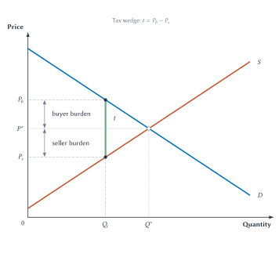
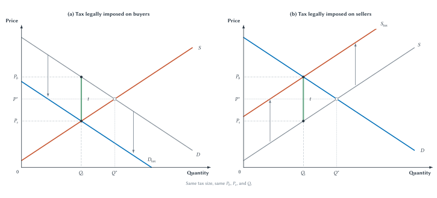
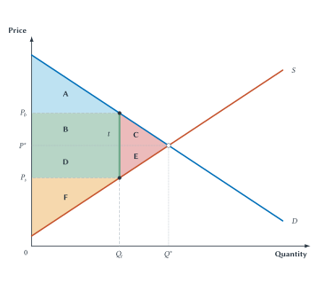
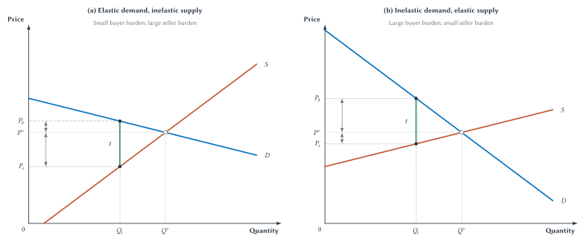
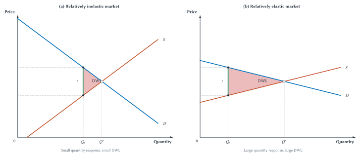
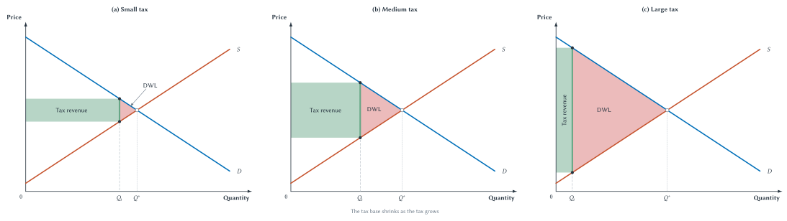
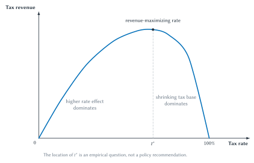

Chapter 7
Taxes and Deadweight Loss
Taxes create a wedge between what buyers pay and sellers receive, divide burdens according to responsiveness, raise revenue, and sometimes prevent gains from trade.

Suppose a state places a $1 tax on every cup of coffee sold. The law must say who sends that dollar to the government. It could require the coffee shop to send the payment, or it could require the customer to do so. That legal detail matters for administration. Lawmakers can decide who sends the tax payment. They cannot decide who ultimately bears the cost.
The customer may pay more than before. The shop may receive less after the tax. Fewer cups may be sold. Workers, landlords, or suppliers may eventually be affected as well. A tax written on paper starts a chain of responses.
This chapter develops a way to follow that chain. We first examine what happens when a tax is legally placed on buyers and then on sellers. Once we see that both rules produce the same basic market outcome, we replace the shifted curves with a simpler tax wedge between the price buyers pay and the price sellers receive.
That wedge lets us answer three different questions:
- Who bears the tax burden?
- How much revenue does the government collect?
- Which gains from trade disappear because fewer transactions occur?
Chapter 5 supplies the first tool: elasticity tells us how easily buyers and sellers can adjust. Chapter 6 supplies the second: consumer surplus, producer surplus, and total surplus let us compare the taxed market with the efficient no-tax outcome.
Key Point
Taxes Create Trade-Offs
Taxes can fund valuable public services, but they also change incentives and may prevent mutually beneficial trades. Good tax analysis follows both sides of that trade-off.
A Tax Changes Two Prices
Before drawing a tax, we need a few terms. They will become easier once the diagrams give them something concrete to describe.
| Term | Meaning |
|---|---|
| Legal incidence | Who is legally responsible for paying the tax to the government. |
| Economic incidence | Who ultimately bears the burden after prices and behavior adjust. |
| Per-unit tax | A fixed dollar tax on each unit sold, such as $1 per gallon. |
| Percentage tax | A tax equal to a percentage of the price, income, or value being taxed. |
| Tax wedge | The gap between the price buyers pay and the price sellers receive. |
| Tax base | The activity, good, income, property, or transaction being taxed. |
| Tax revenue | Tax per unit multiplied by the number of units sold after the tax. |
| Deadweight loss | Lost gains from trade caused by trades that no longer occur. |
Table 7.1. The basic language of taxation. The central distinction is between who legally sends the payment and who is worse off after prices and behavior adjust.
Legal incidence names the side legally responsible for sending the tax payment. Economists also call this tax remittance. Economic incidence asks who actually bears the burden. The two need not be the same.
The core diagrams use a per-unit tax, a fixed amount on each unit sold. A $1 tax on each gallon of gasoline is a per-unit tax. Many real taxes instead equal a percentage of value. A 6 percent sales tax is a percentage tax, also called an ad valorem tax. The amount collected rises with the price, but the same incidence logic still applies.
Every tax also needs a tax base: the good, income, property, transaction, or other activity being taxed. For our coffee example, the tax base is the number of taxable cups sold. Later, when we study income taxes, the base will be taxable income.
For now, keep the $1 coffee tax in mind. We will impose it first on buyers.
What If Buyers Send The Tax?
Suppose the seller posts a price of $4 and buyers must send an additional $1 to the government. The cup costs the buyer $5 in total. A buyer willing to pay at most $4.50 will no longer purchase it.
At every quantity, buyers are willing to give sellers $1 less because $1 of their total payment must go to the government. In Figure 7.1(a), the adjusted demand curve is therefore $1 below the original demand curve.
This deserves careful wording. The tax has not changed buyers’ tastes, income, or underlying willingness to pay. The original demand curve still shows what a cup is worth to them in total. The lower curve shows how much of that willingness to pay remains available for the seller after the buyer pays the tax.
Where the adjusted demand curve meets supply, sellers receive \(P_s\). At that same quantity, the original demand curve shows that buyers pay \(P_b=P_s+t\), where \(t\) is the tax. Quantity falls from the no-tax level \(Q^*\) to the taxed quantity \(Q_t\).
What If Sellers Send The Tax?
Now change only the legal rule. Sellers must send the $1 tax payment to the government.
If a shop needs to receive $4 to make a cup worthwhile, buyers must now pay $5 so the shop can keep $4 after tax. At every quantity, the buyer price required to bring forth that supply is $1 higher. Figure 7.1(b) represents this by shifting supply upward by the tax.
Again, the underlying cost of brewing the coffee has not changed. The original supply curve still shows sellers’ production costs. The upper curve shows the price buyers must pay for sellers to cover both production cost and the tax.
Demand intersects the adjusted supply curve at the buyer price \(P_b\). At the same quantity, the original supply curve shows what sellers keep: \(P_s=P_b-t\).

Figure 7.1. Legal assignment does not determine the final burden. Whether buyers or sellers send the tax payment, buyers pay \(P_b\), sellers receive \(P_s\), and quantity falls to \(Q_t\) in this competitive-market model.
The two legal rules produce the same modeled result:
- buyers pay more than before
- sellers receive less than before
- quantity falls
- the gap between the two prices equals the tax
The government could collect the dollar at the cash register, from the seller’s bank account, or through a separate buyer filing. Those arrangements may differ in administrative cost or compliance. But merely changing the name on the tax bill does not make the economic burden disappear or move entirely to that side.
Common Mistake
Legal Payment Is Not Economic Burden
Who sends the check to the government is not necessarily who bears the cost of the tax.
The fall in quantity may look like a secondary detail. It is not. Once we return to the gains-from-trade logic of Chapter 6, that reduction will explain the tax’s deadweight loss.
The Tax-Wedge Shortcut
Drawing a shifted demand curve and then a shifted supply curve is useful once. Repeating both diagrams every time would hide the simple idea they share. Economists usually draw the tax directly as a vertical wedge.
Figure 7.2 returns to the original demand and supply curves. At the taxed quantity \(Q_t\), the height of demand shows the price buyers pay, \(P_b\). The height of supply shows the price sellers receive, \(P_s\). The vertical distance between them is the per-unit tax:
\[ P_b-P_s=t \]
Before the tax, buyers paid and sellers received the same equilibrium price, \(P^*\). After the tax, there are two prices.
Figure 7.2. A tax creates a wedge between two prices. The buyer burden is the increase from \(P^*\) to \(P_b\); the seller burden is the decrease from \(P^*\) to \(P_s\).
Suppose the no-tax price was $4.00. After a $1 tax, buyers pay $4.60 and sellers receive $3.60. Buyers bear 60 cents of the burden because their price rose by 60 cents. Sellers bear 40 cents because the amount they keep fell by 40 cents. The two burdens add to the $1 wedge.
Nothing requires a 50-50 division. The split depends on how buyers and sellers respond, a question we will answer with elasticity. But it is already clear why the legal assignment is not enough. Even if sellers remit the entire $1, buyers in this example still bear 60 cents through a higher price.
Quick Concept
Tax Incidence
Tax incidence describes who actually bears the economic burden of a tax after prices and behavior adjust.
Study And Learn
Policy Analysis Rhythm
Start from the no-tax benchmark. Add the tax wedge. Ask how the tax changes what buyers pay and sellers receive, how each side can respond, and how consumer surplus, producer surplus, tax revenue, deadweight loss, and distribution change.
The wedge explains who pays more and who receives less. To decide what happens to total economic value, we now return to the surplus tools from Chapter 6.
Welfare Before And After A Tax
The no-tax equilibrium in Chapter 6 maximized total surplus under the competitive-market assumptions. Every unit up to \(Q^*\) was traded because its value to buyers exceeded its cost to sellers.
A tax changes that outcome in two ways. First, it transfers part of consumer and producer surplus to the government as tax revenue. Second, it lowers quantity, so some gains from trade are never created.
Figure 7.3 separates these effects with lettered areas. The letters matter because the same diagram can be used for class discussion, homework, and exams without relying on color.

Figure 7.3. A tax transfers some surplus and destroys some surplus. After the tax, areas \(B+D\) become government revenue, while areas \(C+E\) are gains from trade that disappear.
Start with the market before the tax:
- Consumer surplus is \(A+B+C\).
- Producer surplus is \(D+E+F\).
- Total surplus is \(A+B+C+D+E+F\).
Now add the tax:
- Consumer surplus falls to \(A\).
- Producer surplus falls to \(F\).
- The government collects \(B+D\) in tax revenue.
- Areas \(C+E\) become deadweight loss.
Consumers lose \(B+C\). Producers lose \(D+E\). But not all those losses disappear. Areas \(B+D\) are transferred to the government. The money can finance public goods, services, or transfers. Counting it as revenue does not claim that every government use is equally valuable. It simply recognizes that the payment has moved rather than vanished.
Tax revenue is the tax collected on each unit multiplied by the number of units sold:
\[ \text{Tax revenue}=t\times Q_t \]
That is why revenue appears as a rectangle. Its height is the tax per unit, and its width is the after-tax quantity.
Deadweight loss is different. No one receives areas \(C+E\). Those areas represent value that is never created.
Common Mistake
Tax Revenue Is Not Deadweight Loss
Tax revenue is transferred to the government. Deadweight loss is the surplus from mutually beneficial trades that no longer occur.
Why Quantity Creates The Deadweight Loss
Consider one of the units between \(Q_t\) and \(Q^*\). Suppose a buyer values that cup of coffee at $4.50 and a seller can provide it for $4.00. Without a tax, any price between $4.00 and $4.50 can make both sides better off. The trade creates 50 cents of total surplus.
Now impose a $1 tax. There is no price that works for both sides. If the seller receives $4.00, the buyer must pay $5.00 after tax, more than the cup is worth to her. If the buyer pays no more than $4.50, the seller keeps only $3.50, less than production cost. The $1 wedge blocks a trade that would otherwise have created 50 cents of surplus.
Repeat that logic across every lost unit between \(Q_t\) and \(Q^*\). The sum of those missing gains is the deadweight-loss triangle.
The tax does not create deadweight loss merely because \(P_b\) is high or \(P_s\) is low. Those price changes divide the burden. The efficiency loss occurs because quantity falls and beneficial transactions disappear.
This distinction matters throughout policy analysis. A change in who receives surplus is a distributional effect. A reduction in the amount of surplus created is an efficiency effect. A tax usually does both.
Key Point
Deadweight Loss Means Lost Gains From Trade
The tax pushes the price buyers pay above the price sellers receive. Some units that buyers value more than sellers’ costs are no longer traded, so their potential surplus disappears.
The welfare diagram shows the size and location of the loss. It does not by itself tell us whether the tax is good policy. A complete judgment must also consider what the revenue funds, who bears the burden, whether the untaxed market has another problem, and what alternatives are available.
In Chapter 10, for example, a tax on pollution may correct an external cost that the ordinary supply curve leaves out. In that setting, reducing quantity can improve welfare. Here we retain the Chapter 6 benchmark: the untaxed competitive quantity is efficient, so an ordinary revenue-raising tax reduces gains from trade.
The next question is distributional. Figure 7.2 split the wedge between buyers and sellers, but what determines the split? The answer comes from Chapter 5.
Elasticity Determines Tax Incidence
Elasticity measures responsiveness. A more elastic side of the market changes its behavior more strongly when its price changes. A less elastic side has fewer practical ways to adjust.
That difference determines tax incidence.
Suppose buyers have many substitutes. If one good becomes more expensive after tax, they can switch to another product, delay buying, or leave the market. Sellers cannot easily make those buyers absorb a large price increase. Buyers escape more of the burden by reducing their purchases.
Now suppose sellers have specialized equipment that cannot be used elsewhere. They may continue supplying even when the amount they receive falls. Sellers then bear more of the burden.
Figure 7.4 holds the tax size and original equilibrium fixed while changing relative elasticity.

Figure 7.4. The less-elastic side bears more of the tax. The side with fewer ways to adjust experiences the larger change from the no-tax price.
In panel (a), demand is relatively elastic and supply is relatively inelastic. Buyers can adjust more easily than sellers. The buyer price rises only a little, while the seller price falls substantially. Sellers bear more of the tax.
In panel (b), demand is relatively inelastic and supply is relatively elastic. Sellers can redirect resources more easily than buyers can reduce purchases. The buyer price rises substantially, while the seller price falls only a little. Buyers bear more.
The general rule is:
The less-elastic side of the market tends to bear more of the tax.
Do not turn that rule into “buyers always pay sales taxes” or “businesses always pass taxes forward.” The answer depends on the market, available substitutes, and time horizon.
For example, visitors may have many alternatives to staying in one particular tourist city, while the city’s hotels cannot move their buildings elsewhere. A hotel-room tax may therefore burden local hotel owners or landowners more than its legal name suggests. In another market, buyers may have few alternatives while sellers can redirect goods elsewhere, producing a larger buyer burden.
Time also matters. A side that looks trapped in the short run may find more alternatives later. Buyers can change routines, firms can relocate investment, workers can retrain, and contracts can be rewritten. Tax incidence can therefore shift over time.
Notice the connection to the opening of the chapter. The law tells us who remits the tax. Elasticity tells us who has room to escape it.
When one side escapes more of a tax, the burden does not disappear. It shifts toward the side with fewer alternatives.
Elasticity Also Determines Deadweight Loss
Elasticity does a second job. Incidence asks how the wedge is divided. Deadweight loss asks how many trades disappear.
If buyers and sellers barely change quantity, \(Q_t\) remains close to \(Q^*\). The tax creates a small lost-trade triangle. If they respond strongly, quantity falls much more and deadweight loss is larger.
Figure 7.5 compares two markets facing the same tax.

Figure 7.5. Stronger quantity responses create larger deadweight loss. With the same tax wedge, a more elastic market loses more mutually beneficial trades.
This result is easy to remember if we return to the meaning of deadweight loss. The loss comes from transactions that no longer happen. More responsive buyers and sellers cancel more transactions, so more surplus disappears.
Incidence and deadweight loss are related to elasticity, but they are not the same question. A relatively elastic side may bear less of the tax because it can adjust away. Yet that very adjustment contributes to a larger change in quantity and potentially greater deadweight loss.
This is one reason tax design cannot be evaluated from the tax rate alone. Policymakers need to know what people can do in response.
What Happens As A Tax Gets Larger?
So far, we have compared different markets facing the same tax. Now hold the market fixed and increase the tax.
A larger tax raises the amount collected on every unit still sold, but it also causes more buyers and sellers to leave the market. Revenue depends on both forces.
Figure 7.6 follows a small, medium, and large tax in the same market. The tax-revenue rectangle has height equal to the tax and width equal to the remaining tax base, \(Q_t\). The deadweight-loss triangle covers the lost transactions between \(Q_t\) and \(Q^*\).

Figure 7.6. Larger taxes shrink the tax base and expand deadweight loss. Revenue can rise at first and then fall when the reduction in taxable activity becomes large enough.
Deadweight loss grows more than proportionally in the standard straight-line model. If doubling the tax approximately doubles both the wedge’s height and the reduction in quantity, the triangle’s area becomes roughly four times as large:
\[ \text{DWL}=\frac{1}{2}\times\text{tax wedge}\times\text{reduction in quantity} \]
The exact relationship depends on the shapes of demand and supply, but the mechanism is general. A larger wedge blocks more trades, and the blocked trades extend farther from the equilibrium.
Revenue behaves differently. A larger tax increases revenue per remaining unit but reduces the number of taxable units. With a small tax, the first effect may dominate. With a very large tax, the shrinking base can dominate.
That tension leads to one of the best-known ideas in public finance.
Tax Rates, Tax Bases, And The Laffer Curve
The Laffer curve shows the relationship between a tax rate and the revenue it raises. Its logic fits in one line:
\[ \text{Tax revenue}=\text{tax rate}\times\text{tax base} \]
At a zero tax rate, revenue is zero. Raising the rate initially tends to raise revenue. But the tax base is not fixed. A government can raise a tax rate by law. It cannot command the tax base to stand still. People may change how much they work, save, invest, buy, sell, report, or locate in response to taxation.
They may also change the timing or legal form of income. A business owner might shift compensation between wages and business income. A worker might take compensation as a benefit rather than cash. An investor might delay realizing a gain. Some responses change real economic activity; others change how activity is reported.
Tax avoidance means legally arranging activity to reduce taxes. Tax evasion means illegally hiding taxable activity or income. Both can shrink the measured tax base, though they raise very different legal and ethical issues.
If the tax base shrinks enough, raising the rate can stop increasing revenue and may even reduce it. Figure 7.7 represents that possibility.

Figure 7.7. Revenue depends on both the rate and the base. A higher rate raises more per unit but can shrink taxable activity enough that total revenue eventually falls.
The curve makes a logically valid point, but it does not answer every practical question. It does not tell us where a real tax currently lies. A tax increase raises revenue on the rising side and lowers revenue on the falling side. The diagram alone cannot locate the economy.
Nor does the curve prove that every tax cut pays for itself. If the current rate is below the revenue peak, a cut reduces revenue. Likewise, it does not prove that every rate increase raises revenue. The direction is an empirical question about the particular tax base and the ways people can respond.
Recent research on the top U.S. income-tax schedule makes another useful point: the revenue curve may be fairly flat near its peak once several tax bases, income shifting, and interactions among taxes are considered.1 If so, a range of rates might raise similar revenue. That would make the exact revenue-maximizing rate less informative, not more.
Most important, a revenue maximum is not automatically the best policy. Government may care about economic growth, distribution, fairness, administrative feasibility, and the value of the spending financed by the tax. A policy designed only to maximize revenue could impose large costs for a small fiscal gain.
The Laffer curve takes us from one simple market to an entire tax base. Real tax systems add still more choices: what counts as taxable, how rates change with income, who remits the tax, and how the rules are enforced.
Who Bears Taxes On Corporations And Technology?
The distinction between legal and economic incidence becomes especially important when a tax is written on an organization or a machine.
A corporation may calculate and remit corporate income tax, but a corporation is not a person who can experience a loss of well-being. The burden must reach people connected to it.
Owners may receive lower after-tax returns. Workers may face lower wages or fewer job opportunities. Customers may pay higher prices. Suppliers may lose sales. Which channel matters most depends on competition, capital mobility, relative elasticities, and the time available to adjust.
Evidence does not support one universal split. A Congressional Budget Office review emphasizes the uncertainty surrounding corporate-tax incidence.2 One study of local business taxes across German municipalities found substantial wage effects and estimated that workers bore about half the burden in that particular setting.3 That is useful evidence of a channel, not a number to apply mechanically to every country, tax, or period.
A proposed tax on robots or AI systems raises the same first question. A robot, server, algorithm, or language model cannot bear a welfare burden. The law may attach the tax to the firm that owns or uses the technology, but people bear the consequences.
The firm may automate less, invest less, change which workers it hires, raise product prices, or accept lower profits. A tax on AI may protect workers who compete with it while taxing a productive tool used by other workers. Customers may pay more or receive less innovation.
Formal research on robot taxation finds that conclusions depend on worker adjustment, transition costs, and the rest of the tax system.4 For this chapter, the lesson is not a universal recommendation. It is that naming the legal target does not settle incidence.
| Legal Tax Target | Possible Economic Burden-Bearers | Incidence Question |
|---|---|---|
| Corporation | Owners, workers, customers, suppliers, or people connected to other firms. | How do prices, wages, profits, investment, and output change after the tax? |
| AI system or robot | Firm owners, workers, customers, users, or suppliers of complementary inputs. | Does the tax change automation, employment, output prices, profits, or investment? |
Table 7.2. Organizations and machines remit taxes; people bear them. The incidence question follows the changes in prices, wages, profits, employment, and investment.
Sideline
Who Bears Taxes On Businesses And Technology?
A corporation, robot, algorithm, or AI model can be named in a tax law, but it cannot be the final human burden-bearer. Ask who can adjust, through which channel, and over what time horizon.
A Tax System Is More Than A Rate
Supply-and-demand diagrams isolate the central price and quantity effects of a tax. An actual tax system must also define the tax base, set a rate structure, collect payments, verify information, and respond to avoidance and evasion.5
The U.S. income tax offers a familiar example without requiring us to study current tax brackets.
Begin with two rate concepts. A marginal tax rate is the rate applied to the next dollar of taxable income. An average tax rate is total tax divided by total income.
Imagine a fictional system that taxes the first $50,000 of income at 10 percent and income above $50,000 at 20 percent. A person earning $60,000 pays 10 percent on the first $50,000 and 20 percent only on the final $10,000. The marginal rate is 20 percent because that is the rate on the next dollar. The average rate is lower because not every dollar is taxed at 20 percent.
This prevents a common misunderstanding. Moving into a higher bracket does not normally cause all previous income to be taxed at the new marginal rate.
Tax systems are also described as proportional, progressive, or regressive:
- A proportional tax takes the same percentage of income as income rises.
- A progressive tax takes a larger percentage of income as income rises.
- A regressive tax takes a smaller percentage of income as income rises.
These words describe the pattern of burdens, not whether a tax is morally good or bad. A tax can also look different depending on whether we examine one part of the tax code or the full collection of taxes and transfers.
The rate schedule is only one design choice.
| Design Feature | Principles-Level Point |
|---|---|
| Tax base | The system must define what counts as taxable income. |
| Marginal and average rates | The marginal rate applies to the next dollar; the average rate is total tax divided by total income. |
| Rate structure | A tax can be proportional, progressive, or regressive depending on how burden changes with income. |
| Deductions and credits | Rules can narrow the base or change incentives for particular activities. |
| Behavioral response | People may change work, saving, timing, reporting, or business form. |
| Compliance costs | Taxpayers spend time and money understanding rules, keeping records, and filing returns. |
| Enforcement and avoidance | Governments must collect taxes and limit evasion, while taxpayers may legally arrange their affairs to reduce taxes. |
Table 7.3. Real tax design involves rates, bases, behavior, and administration. The supply-and-demand wedge captures an important part of taxation, but not every cost or response.
A deduction removes some amount from taxable income. A credit reduces the tax owed. Either can pursue a policy goal, change who bears the tax, or encourage a particular activity. Either can also narrow the tax base and make the system more complicated.
Complexity creates real resource costs. Households and firms spend time keeping records, interpreting rules, and preparing returns. Governments spend resources on administration and enforcement. These costs do not appear in the simple tax-wedge diagram, but they matter when comparing tax systems.
Rules can also change what people report without changing the same amount of real activity. If one kind of income is taxed more heavily than another, people may reorganize compensation or business ownership. That response may reduce measured revenue even when total production changes little.
This is why a tax cannot be judged from its headline rate alone. A broad base with a lower rate may raise the same revenue as a narrow base with a higher rate, but the two systems can create different incentives, burdens, and compliance costs.
Historical Note
Economist Profile: William Vickrey
William Vickrey, public-finance economist and 1996 Nobel laureate.6
William Vickrey (1914-1996) treated taxes and public prices as systems that shape behavior. His work on progressive taxation examined not only how much revenue a rule collected, but also how people could respond and whether the rule could be administered in practice.7
Vickrey applied the same habit to transportation. A crowded road at rush hour is scarce, so he argued that prices should reflect when and where congestion occurs. The full congestion-pricing argument belongs in Chapter 10, but the method belongs here: begin with the behavior a rule changes, not merely the name placed on the payment.
Comparing The Full Trade-Off
Taxes are neither costless sources of money nor pure losses. They are tools used to finance government, redistribute resources, and sometimes change behavior. Their benefits and costs depend on design and context. A tax may finance something worth more than its cost. But calling the spending valuable does not make the cost of raising the money disappear.
The basic diagram asks whether a tax prevents gains from trade. Incidence analysis asks who is worse off after adjustment. The Laffer curve asks how the tax base responds to the rate. A real tax-system analysis adds equity, compliance, enforcement, and the value of public spending.
| Policy Question | Why It Matters |
|---|---|
| Revenue | Taxes can fund public goods, transfers, and government services. |
| Incidence | The legal payer may not be the person who bears the economic burden. |
| Efficiency | Taxes can prevent mutually beneficial trades and create deadweight loss. |
| Behavior change | Some taxes are intended to discourage behavior, such as pollution or smoking. |
| Fairness | Distributional goals may justify accepting some efficiency cost. |
| Administration | Collection, compliance, and enforcement costs can matter. |
Table 7.4. Tax policy requires more than one question. A serious evaluation asks what the tax funds, who bears it, how behavior changes, what gains are lost, and how the system is administered.
The competitive benchmark from Chapter 6 remains our starting point. When that benchmark applies, a tax lowers quantity below the efficient level and creates deadweight loss. But identifying that loss does not finish the policy analysis. The revenue may fund something valuable, distribution may matter, and the original market may contain an externality or another failure.
The durable lesson is narrower and more useful: trace the response. Ask who can change behavior, which price or opportunity changes, how the tax base moves, and which people ultimately bear the cost.
Chapter Study Map
Core Ideas
- Two prices: after a tax, buyers pay \(P_b\) and sellers receive \(P_s\).
- Tax wedge: the difference \(P_b-P_s\) equals the per-unit tax.
- Legal versus economic incidence: the legal remitter need not bear the economic burden.
- Elasticity and burden: the less-responsive side of the market tends to bear more.
- Tax revenue: tax per unit multiplied by after-tax quantity.
- Deadweight loss: the value of mutually beneficial trades that disappear when quantity falls.
- Elasticity and efficiency: stronger quantity responses generally create larger deadweight loss.
- Tax size: larger taxes shrink the tax base and cause deadweight loss to grow more than proportionally in the standard model.
- Laffer curve: revenue depends on both the tax rate and a tax base that responds to behavior.
- Tax-system design: rates, bases, deductions, credits, compliance, and enforcement work together.
Diagrams And Tables
- In Figure 7.1, explain why buyer and seller remittance produce the same modeled \(P_b\), \(P_s\), and \(Q_t\).
- In Figure 7.2, identify the tax wedge and divide it into buyer and seller burdens.
- In Figure 7.3, state every before-and-after welfare area in words before using the letters.
- In Figure 7.4, identify the less-elastic side and connect it to the larger burden.
- In Figure 7.5, connect the change in quantity to the size of deadweight loss.
- In Figure 7.6, distinguish the tax per unit from the shrinking number of units taxed.
- In Figure 7.7, explain why the Laffer curve cannot reveal the best tax rate by itself.
A Complete Tax Explanation
A strong explanation should:
- identify the no-tax price and quantity
- identify the price buyers pay and the price sellers receive
- separate legal remittance from economic burden
- use relative elasticity to explain the division of burden
- calculate or identify tax revenue
- explain deadweight loss as lost gains from trade
- compare the efficiency cost with revenue, distribution, and the policy’s purpose
Common Mistakes
- Assuming the person or firm that remits the tax bears all of it.
- Forgetting that buyers can pay more while sellers receive less.
- Treating tax revenue as deadweight loss.
- Calling every reduction in consumer or producer surplus a social loss.
- Explaining deadweight loss with the higher price rather than the reduction in quantity.
- Saying the more-elastic side bears more because it responds more.
- Treating a corporation, robot, or AI model as the final burden-bearer.
- Confusing a marginal tax rate with the average rate paid on all income.
- Assuming a Laffer curve proves that a particular tax increase or cut will raise revenue.
- Treating the revenue-maximizing rate as the socially best tax rate.
Practice And Enrichment
No companion applet is required for this draft. A later tax-wedge explorer could let students vary elasticity and repeatedly identify \(P_b\), \(P_s\), \(Q_t\), revenue, incidence, and deadweight loss. The seven static figures provide the complete first-edition fallback.
Study And Learn
Research Brief: Property-Tax Relief Or Tax Shift?
Property-tax bills are highly visible, and proposals to cap, reduce, or eliminate them can be politically attractive. Recent proposals in Florida and North Dakota provide possible starting points, but their status and details must be checked when you begin your research.8
Economic research presents a useful puzzle. Recurrent taxes on real property are often found to be among the least damaging taxes to long-run growth because land and buildings cannot easily move to another jurisdiction. The case is strongest for a tax on land, whose supply is fixed. An ordinary property tax also applies to buildings and improvements, however, so its design can affect construction, maintenance, and other choices.9
Write a short research brief that answers the following questions:
- Find a current proposal in one state to cap, reduce, rebate, or eliminate property taxes. Use an official government source to explain exactly what would change and the proposal’s current status.
- What local services currently depend on the affected revenue? Would the proposal reduce spending, replace the money with state transfers, or shift the burden to another tax? Eliminating a tax does not eliminate the cost of providing the services it financed.
- Why does an immobile tax base generally create a smaller behavioral response and less deadweight loss? Distinguish the land portion of the tax from the portion applied to buildings and improvements.
- Who is likely to gain and lose in the short run and over time? Consider current homeowners, future buyers, renters, businesses, and users of local services. Explain whether changes in expected future taxes could be reflected in property values.
- Some homeowners have valuable property but limited current income. Compare a broad tax cap or elimination with targeted relief such as an income-based credit or payment deferral.
- Reach a conclusion. Does the proposal reduce an unusually harmful tax, provide targeted relief from a liquidity problem, or replace a comparatively efficient tax with a more distortionary one? State what evidence would change your judgment.
The assignment does not presume that every property tax is well designed or that every relief proposal is mistaken. It asks you to trace the tax base, behavioral responses, incidence, replacement revenue, and services financed before reaching a conclusion.
Review Questions
- What is the difference between legal incidence and economic incidence?
- What happens to the price buyers pay, the price sellers receive, and quantity when a per-unit tax is imposed?
- Why does a tax on buyers shift the amount buyers are willing to pay sellers downward by the tax?
- Why does a tax on sellers shift the buyer price required by sellers upward by the tax?
- Why do buyer and seller remittance produce the same modeled outcome?
- Define the tax wedge and write its relationship to \(P_b\) and \(P_s\).
- How is the buyer burden measured? How is the seller burden measured?
- Define tax incidence.
- Why does the less-elastic side of a market tend to bear more of a tax?
- Define tax revenue and explain why it appears as a rectangle.
- Define deadweight loss.
- Why is tax revenue not deadweight loss?
- Why does a tax create deadweight loss in the Chapter 6 competitive benchmark?
- How does elasticity affect deadweight loss?
- Why does deadweight loss tend to grow more than proportionally as a tax increases?
- Define the tax base.
- What two opposing forces determine whether a higher tax rate raises revenue?
- Why does the Laffer curve not identify the socially best tax rate?
- Distinguish marginal and average tax rates.
- Distinguish proportional, progressive, and regressive taxes.
- Why can a corporation or robot not be the final economic burden-bearer?
- What additional costs and responses appear in a real tax system but not in the basic wedge diagram?
Economic Reasoning Questions
- A $2 per-unit tax causes the buyer price to rise by $1.20 and the seller price to fall by $0.80. Who legally remits the tax cannot be observed. What can you say about economic incidence?
- Demand is highly inelastic while supply is highly elastic. Predict which side bears more of a tax and explain why.
- A city requires hotels to remit a room tax. A student concludes that hotel owners must bear the entire burden. What information is missing?
- Before a tax, consumer surplus is \(A+B+C\) and producer surplus is \(D+E+F\). Afterward, consumer surplus is \(A\), producer surplus is \(F\), and revenue is \(B+D\). Identify each side’s loss and the deadweight loss.
- A $3 tax is collected on 8,000 units. Calculate tax revenue. If the no-tax quantity was 10,000 units, explain what additional information is needed to calculate deadweight loss.
- A buyer values a unit at $18 and a seller can produce it for $16. Explain how a $3 tax could prevent the trade and identify the lost total surplus.
- Two markets face the same tax. Quantity barely changes in Market A but falls sharply in Market B. Which market has the larger deadweight loss? What can you infer about responsiveness?
- A tax rate doubles, but taxable activity falls by more than half. What happens to revenue? Explain using both parts of the revenue equation.
- A company remits a new corporate tax and then reduces investment, raises some prices, and slows wage growth. Identify the possible burden-bearers without claiming a precise division.
- A proposal taxes each AI system deployed by a firm. List three ways firms might respond and explain how each response could shift the burden to people.
- A fictional income-tax system raises the marginal rate on income above $100,000. Why does that not mean every dollar earned by a person above the threshold is taxed at the new rate?
- Someone says, “The Laffer curve proves tax cuts increase revenue.” What two empirical questions must be answered before that conclusion follows?
- A tax creates deadweight loss but finances a public service valued by taxpayers. Why is the deadweight-loss triangle not a complete policy verdict?
- A pollution tax reduces output. Why might Chapter 10 evaluate that quantity reduction differently from the ordinary tax analyzed here?
Source Notes
Rachel Moore, Brandon Pecoraro, and David Splinter, “Laffer Curves Are Flat”, working paper, February 2, 2026. The chapter uses only the qualitative finding that richer tax-base modeling can produce a relatively flat revenue curve near its peak; it reports no maximizing-rate estimate.↩︎
Jennifer C. Gravelle, “Corporate Tax Incidence: A Review of Empirical Estimates and Analysis”, Congressional Budget Office Working Paper 2011-01. The review emphasizes that corporate-tax burden can reach owners of capital, workers, and consumers and that estimates depend on assumptions and methods.↩︎
Clemens Fuest, Andreas Peichl, and Sebastian Siegloch, “Do Higher Corporate Taxes Reduce Wages? Micro Evidence from Germany”, American Economic Review 108, no. 2 (2018): 393-418. The estimate is specific to variation in local German business taxation over the study period and is not presented as a universal split.↩︎
Joao Guerreiro, Sergio Rebelo, and Pedro Teles, “Should Robots Be Taxed?”, Review of Economic Studies 89, no. 1 (2022): 279-311. The chapter uses the paper only to support the point that automation-tax conclusions depend on adjustment and the surrounding tax system.↩︎
Joel Slemrod and Christian Gillitzer, Tax Systems (MIT Press, 2013). The book provides the broader frame linking rates, bases, remittance, compliance, administration, avoidance, evasion, and enforcement.↩︎
William Vickrey, unknown photographer, source identified as the Nobel Foundation. Wikimedia Commons source. CC0 1.0 Universal Public Domain Dedication.↩︎
William S. Vickrey, Agenda for Progressive Taxation (1947; reprinted 1972); and Nobel Prize, “William Vickrey: Biographical”. The profile keeps his work at a principles level.↩︎
See, for example, the Florida Senate’s 2026 special-session bill summary and the North Dakota governor’s 2025 property-tax relief and reform plan. These are current-policy starting points, not neutral evaluations. Verify their status and find the controlling official documents before relying on them.↩︎
OECD, Housing Taxation in OECD Countries (2022). The report reviews why recurrent taxes on immovable property are often comparatively efficient, why a pure land tax creates fewer investment distortions than a tax on improvements, and why actual effects depend on design and incidence.↩︎
{kind=link}